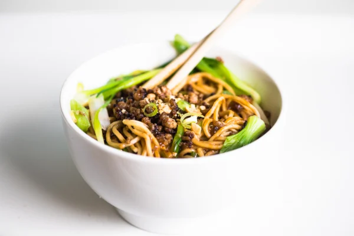

Dan Dan Noodles

Description
The name refers to long poles that street vendors carried across their shoulders, with a pot of noodles on one side, and sauce on the other. Because it comes from such humble roots, there is no one official recipe for dan dan noodles, and that makes it a fun dish to play around with. The basic idea is noodles served with crispy ground pork, wilted greens, and a chili oil based sauce.
Ingredients
Pork
- 1 tsp cooking oil
- 1/2 lb ground pork
- 2 tsp Hoisin sauce
- 2 tsp Mirin
- 1 tsp Tamari soy sauce
- 1/2 tsp five spice powder
Noodles
- 9 ounce package of Asian noodles, I used Hakubaku Ramen
Sauce
- 2 Tbsp tahini (sesame paste)
- 3 Tbsp soy sauce
- 2 tsp sugar
- 1/2 tsp five spice powder
- 1/2 tsp ground sichuan peppercorns (I did this in my coffee/spice grinder)
- 1/3 cup chili oil
- 2 cloves garlic, minced
- 1 tsp grated fresh ginger
Veggies
- 1 bunch scallions, trimmed and sliced in half lengthwise
- 2 or 3 baby bok choy, trimmed and sliced lengthwise
Garnish
Steps
- Set a large pot of water to boil on the stove.
- Put the oil in a skillet and heat on medium high. Brown the pork, breaking it apart into crumbles as it cooks. When it has cooked through, add the Hoisin, Mirin, soy and spice powder and continue to cook until the liquid has evaporated and the meat is nice and crispy. Remove the meat to a plate.
- Cook the noodles according to the package instructions, this is usually just a few minutes. At the last minute, add the greens to the boiling water. Reserve about a cup of the cooking water, then drain.
- Add 1/3 cup of the cooking water to the pork skillet, and scrape up the browned bits from the bottom, off the heat.
- Whisk the sauce ingredients to combine. Note: you're not cooking the sauce, just mixing it. Taste to adjust any of the ingredients to your liking. Add a little more noodle water if you like it thinner. Divide the sauce equally between 4 bowls.
- Top the sauce with the noodles and wilted veggies. Then spoon the crispy pork over top.
- Garnish with chopped peanuts. Toss the noodles with the sauce before eating.